Zase v Anglii
Dartmoor
Nuže, viděl jsem vše: viděl jsem hory a jezera, moře, pastviny i kraje podobné zahradám; jen pořádný anglický les jsem neviděl, neboť tady, abych tak řekl, pro samé stromy nemají les. I rozjel jsem se na místo, kde je na mapě „Dartmoor Forest“ čili hvozd Dartmoorský; mimoto Dartmoor je, neklamu-li se v literární historii, oblast Baskerwillského psa. Cestou jsem se podíval, odkud vyjela Hispaniola na Stevensonův Ostrov pokladů; je to v Bristolu, nejspíš u toho mostu, kde stála ta briga vonící pomeranči. Jinak v Bristolu není docela nic, leda pěkný kostel, kde bylo zrovna nějaké modlení, katedrála, kde také byla právě pobožnost se zpěvy a kázáním, a konečně starý špitál, kde jsem si nakreslil vousatou karyatidu, chiméru s plnovousem, což je na Bristol dosti zajímavé.
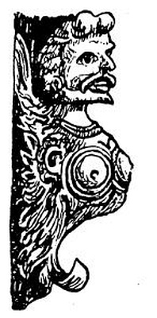
V Exeteru mne přepadla anglická neděle spojená s deštěm. Exeterská neděle je tak důkladná a svatá, že i kostely jsou zavřeny, a pokud se tělesného blaha týče, tedy pocestný pohrdnuvší studenými brambory musí jít spát s hladovým břichem; nevím, jakou zvláštní radost má z toho exeterský Hospodin. Jinak je to pěkné město s příjemným a tichým deštěm a starými anglickými domy, k nimž se ještě vrátím; neboť nyní spěchám do Dartmoorského lesa.
Jede se tam po krásně vinutých silnicích přes oblé kopečky tím nejhuňatěji zeleným krajem, kde jsou nejhustší živé ploty, největší ovce a nejvíc břečťanu, houštin a hlohu a nejkošatější stromy a chalupy kryté nejtlustšími došky, jaké jsem kdy viděl. Takový starý strom v Devonshiru je kompaktní jako skála a dokonalý jako socha. Pak přijdou táhlé, holé, opuštěné kopce bez jediného stromečku; to je Dartmoorský hvozd. Tu a tam trčí ve vřesové samotě navršený žulový balvan jako oltář jakýchsi obrů nebo praještěrů; to jsou „tors“, abyste věděli. Někdy mezi vřesem protéká červený potůček, začerná se propadlá tůně, zasvítí porostlá mokřina; prý v ní beze stopy zapadne jezdec i s koněm, ale já jsem to nemohl zkusit, protože jsem neměl koně. Nízká temena se zatahují, nevím, padají-li to plouhavé mraky nebo dýmá-li věčně prýštící země; mlžný závoj deště zastře oblast žuly a močálů, mraky se těžce sbalují a tragický přísvit odhalí na chvíli pustá lada vřesu, jalovce a kapradí, jež bývala kdysi neproniknutelným hvozdem.
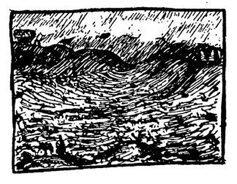
Co to je v člověku, že vidí-li takovou končinu hrůzy a stesku, zatají se v něm dech… že je to krásné?
Nahoru a dolů, nahoru a dolů zeleným Devonem mezi dvěma zdmi živého plotu, jenž čtverečkuje širý kraj jako u nás vonné mezičky, a pořád mezi starými stromy, mezi moudrýma očima stád, nahoru a dolů k červenému pobřeží Devonu.
Přístavy
Ale ovšemže jsem se byl podívat na přístavy, a viděl jsem jich tolik, že si je nyní pletu. Tak počkejte, ve Folkestone, v Londýně, v Leith, v Glasgowě, to jsou čtyři; potom v Liverpoolu, v Bristolu, v Plymouth, a možná že jich bylo ještě víc. Nejhezčí je Plymouth, který je pěkně zavrtán mezi skalami a ostrovy a kde mají starý přístav v Barbikanu s opravdovými námořníky, rybáři a černými bárkami, a nový přístav pod promenádou Hoe s kapitány, sochami a pruhovaným majákem. Ten maják jsem nakreslil, ale není tam vidět, že je bledě modrá noc, že na moři jiskří zelené a rudé lampy bójí a lodí, že sedím pod majákem a mám na klíně černou kočku – myslím skutečnou kočku – a hladím moře, číču, světélka na vodě a celý svět v záchvatu pošetilé radosti, že jsem na světě; a dole v Barbikanu to smrdí rybinou a oceánem jako za časů starého Drakea a kapitána Marryata a moře je pokojné, širé a světelné – říkám vám, v Plymouth je ten nejhezčí přístav.
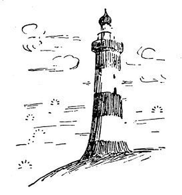
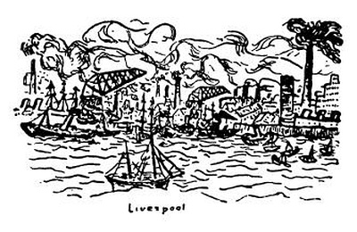
Ale Liverpool, lidi, Liverpool je největší; a pro tu velikost mu nyní odpouštím, čím mi ublížil; neboť pro jakýsi kongres nebo královu návštěvu či co to vlastně bylo, nechtěl pocestnému poskytnout noclehu, a poděsil mne novou katedrálou, velkou a beznadějnou jako zříceniny Caracallových term v Římě, a zahalil se o půlnoci v puritánskou tmu, abych nenašel cestu do mizerné hospody, která mi dala lože vlhké a kysele páchnoucí jako bečka zelí, – jářku, to vše odpouštím Liverpoolu, neboť jsem viděl něco od Dingle až po Bootle a ještě až po Birkenhead tam na druhé straně, žlutou vodu, bučící parní prámy, vlečné lodi, bachraté a černé svině houpající se na vlnách, bílé transatlantiky, doky, bazény, věže, jeřáby, sila, elevátory, dýmající továrny, nakladače, bárky, sklady, loděnice, sudy, bedny, bečky, balíky, komíny, stožáry, lanoví, vlaky, kouř, chaos, houkání, zvonění, bušení, supění, roztržená břicha korábů, zápach koní, potu, moče, vody a odpadků všech zemědílů; a kdybych ještě půl hodiny kupil slova, nedosáhl bych toho počtu, zmatku a rozsahu, který se jmenuje Liverpool. Krásný je parník, když houkaje rozráží vodu svou vysokou hrudí, chrle kouř tlustými komíny; krásný je, když se ztrácí za klenutou plecí vod plouhaje za sebou závoj dýmu; krásná je dálka a cíl, člověče, jenž stoje na přídi odjíždíš. Krásná je plachetka klouzající po vlnách, krásné je odjížděti a přijížděti. Vlasti, jež nemáš moře, není-li nějak úzký tvůj obzor, a zda ti neschází šumění dálek? Ano, ano, ale mohou být hučící rozlohy kolem našich hlav; nelze-li plouti, lze aspoň myslet, brázdit letkami ducha svět širý a vysoký; povídám, ještě je dost místa pro výpravy a pro velké lodi. Ano, je nutno stále vyplouvat; moře je všude, kde je odvaha.
Avšak nikoliv, kormidelníku, obrať prosím; ještě nepoplujeme domů. Nech nás ještě postát tady v té liverpoolské rejdě a dívat se na vše, než se vrátíme; je to ohromné, špinavé a hlučné. Kdepak vlastně je pravá Anglie: tam v těch tichých a čistých cottages mezi strašně starými stromy a tradicemi, v domovech dokonalých, pokojných a jemných lidí, nebo tady, na těch kalných vlnách, v bušících dokách, v Manchestru, v Poplar, na glasgowské Broomielaw? Dobrá, přiznám se, že tomu nerozumím; tam v té Anglii je až příliš dokonale a krásně; a tady, tady je až příliš…
Dobrá, nerozumím tomu; jako by to ani nebyla jedna země a jeden národ. Budiž, tedy vyplujeme; ať mne postříká moře, ať do mne pere vítr; myslím, že jsem viděl příliš mnoho.
Merry Old England
Ještě jednou se však musíme zastavit; musíme se jenom podívat, kde tu vlastně je ta veselá stará Anglie. Stará Anglie, to je, dejme tomu, Stratford, to je Chester, Exeter a já nevím co ještě. Stratford, Stratford, počkejme, byl jsem tam? Ne, nebyl; i neviděl jsem rodný domek Shakespearův, nehledíme-li k tomu, že je od gruntu přestavěn a mimoto že snad žádný Shakespeare vůbec neexistoval. Ale zato jsem byl v Salisbury, kde působil zcela nepochybný Massinger, a v londýnském Templu, kde se zdržoval zaručený Dickens, a v Grasmere, kde žil historicky doložený Wordsworth, a v mnoha jiných dokumentárně nesporných rodištích a působištích. Dobrá, našel jsem porůznu onu dobrou starou Anglii, která po zevní stránce pozůstává z černého trámoví a vyřezávání, následkem čehož je pěkně černobíle pruhovaná. Nerad bych dělal příliš odvážné hypotézy; ale zdá se mi, že černobílé proužky na rukávech anglických strážníků mají svůj původ právě v tom pruhovaném slohu staroanglických domů, jak ukazuje náš obrázek.
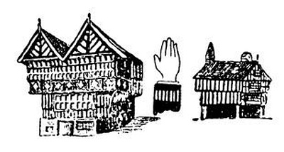
Anglie je totiž země historických tradicí; a vše, co je, má nějakou příčinu, jak učí tuším John Locke. V některých městech, jako například v Chesteru, nosí strážníci bílé pláště jako chirurgové nebo holiči: možná že je to tradice z doby Římanů. Mimoto stará Anglie si libovala ve všelijak vysunutých patrech a štítech, takže takový dům je nahoru pořád širší; ke všemu i okna bývají vystrčena ven jako polovytažené zásuvky, takže takový dům se svými patry, arkýři, výstupky a výklenky vypadá jako velká skládací hračka nebo starý zásuvkový sekretář, který se snad na noc pozastrká a pozavírá, a je to. V Chesteru mají nadto něco, čemu se říká „rows“. Je to podloubí, jenže v prvním patře, a z ulice se tam chodí po schodech, krámy jsou pak dole i nahoře; to není nikde na světě. A v Chesteru ještě mají katedrálu z růžového kamene, kdežto v Yorku je katedrála hnědá, v Salisbury štikově modrá a v Exeteru černá a zelená. Skoro všechny anglické katedrály mají pilíře na způsob potrubí, pravoúhlé presbyterium, ohavné varhany uprostřed hlavní lodi a vějířovitá žebra na klenbě; co v nich nepokazili puritáni, dodělal nebožtík Wyatt svými slohově čistými renovacemi. Například katedrála v Salisbury je něco tak beznadějně dokonalého, že je ti úzko: i oběhneš třikrát město Salisbury jako Achilles město Tróju, a potom, shledávaje, že máš pořád ještě dvě hodiny času do odjezdu vlaku, usedneš na jedinou lavičku v městě mezi tři jednonohé starce a díváš se, jak místní strážník nadouvá tváře, aby rozesmál nemluvně v kočárku. Celkem vzato, není nic děsnějšího, než když v malém městě prší.
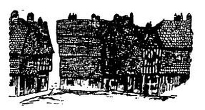
V Salisbury mají i stěny domů pokryté taškami; nakreslil jsem je, abych potěšil pokrývače, kterým snad tento list přijde do rukou. V severních hrabstvích stavěli domky z pěkných šedých kamenů; to je důvod, proč jsou v Londýně skoro všechny domy stavěny z ošklivých šedivých cihel. V Berkshire a Hampshire stavěli šmahem z paprikově červených cihel; proto jsou i v Londýně ulice z červených cihel, jako by je anděl smrti potřel krví. V Bristolu nějaký stavitel nadělal tisíce oken s divnými, trochu maurskými oblouky, a v Tavistocku všechny domky mají portál princetownského vězení. Bojím se, že tím jsem vyčerpal architektonickou rozmanitost Anglie.
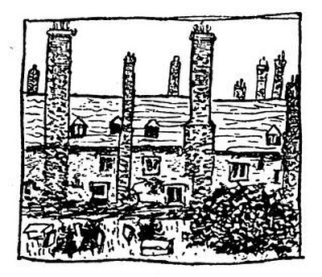
To nejkrásnější v Anglii jsou však stromy, stáda a lidé; a pak ještě lodi. Stará Anglie pak jsou ti růžoví staří gentlemani, kteří zjara nosí šedivý cylindr a v létě honí kuličky na hřištích golfu a vypadají tak svěže a mile, že bych si chtěl s nimi hrát, kdyby mi bylo osm let; a staré ladies, které pořád mají v rukou pletení a jsou růžové, krásné a vlídné, pijí horkou vodu a nikdy vám nevypravují o svých nemocech.
Celkem vzato, země, která dovedla vytvořit nejkrásnější dětství a nejsvěžejší stáří, má jistě něco nejlepšího v tomto slzavém údolí.
Poutník si všímá lidí
V Anglii bych chtěl být krávou nebo dítětem; jsa však mužem dospělým a zarostlým, díval jsem se na lidi této země. Nuže, není pravda, že Angličané nosí šmahem kostkované šaty, lulku nebo licousy; co se toho posledního týče, jediným pravým Angličanem je dr. Bouček v Praze. Každý Angličan nosí gumák nebo deštník, placatou čepici a v ruce noviny; je-li to Angličanka, nosí gumák nebo tenisovou raketu. Příroda má tu sklon k neobyčejné huňatosti, obrůstání, kosmatosti, vlnatosti, ježatosti a všeho druhu chlupu; tak například angličtí koně mají celé trsy a třapce chlupů na nohou a angličtí psi nejsou nic jiného než směšné balíky čupřin. Jen anglický trávník a anglický gentleman se denně holí.
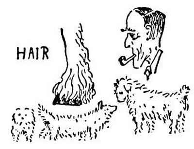
Co je to anglický gentleman, nedá se stručně říci; museli byste znát přinejmenším anglického číšníka z klubu nebo pokladníka na nádraží, nebo dokonce strážníka. Gentleman, to je odměřená sloučenina mlčení, ochoty, důstojnosti, sportu, novin a počestnosti. Dvě hodiny vás dožírá váš protějšek ve vlaku tím, že vás neuzná za hodna pohledu; najednou vstane a podá vám váš kufřík, na který jaksi nemůžete dosáhnout. Tady si lidé vždy dovedou navzájem pomoci, ale nikdy si nemají co říci, ledaže je to o počasí. Proto asi Angličané vynašli všechny hry, protože se při hrách nemluví. Jejich zamlklost je taková, že ani nenadávají veřejně na vládu, na vlak nebo na daně; je to celkem neveselý a uzavřený lid. Místo hospod, kde se sedí, pije a povídá, vynašli bary, kde se stojí, pije a mlčí. Hovornější lidé se dávají na politiku jako Lloyd George nebo na spisovatelství; anglická kniha musí mít totiž aspoň čtyři sta stránek.
Snad se to stalo ze samé zamlklosti, že Angličané polykají půlku každého slova a tu druhou půlku jaksi zmáčknou; i je těžko se s nimi srozumět. Denně jsem jezdil do stanice Ladbroke Grove; přijde konduktér, a já povídám: „Ledbrruk Grröv.“
„…?? Eh?“
„Ledbhuk Ghöv!“
„…??? Eh?“
„Hevhuv Hev!“
„Aa, Hevhuv Hov,“ zaraduje se konduktér a dá mi lístek do Ladbroke Grove. Jakživ se tomu nenaučím.
Ale poznáte-li je blíže, jsou velmi milí a jemní; nikdy nemluví mnoho, protože nikdy nemluví sami o sobě. Baví se jako děti, ale s nejvážnější juchtovou tváří; mají spoustu vžité etikety, ale přitom jsou nenucení jako štěňata. Jsou tvrdí jako z křemene, neschopní přizpůsobit se, konzervativní, loajální, trochu plaší a vždy nesdílní; nedovedou vyjít ze své kůže, ale je to kůže solidní a v každém ohledu výtečná. Nemůžeš s nimi mluvit, aby tě nepozvali na oběd nebo na večeři; jsou pohostinní jako svatý Julián, ale nikdy nedovedou překročit distanci od člověka k člověku. Je ti někdy úzko, jak se cítíš osamělý ve středu těchto vlídných a ochotných lidí; ale kdybys byl malý chlapeček, věděl bys, že jim můžeš důvěřovat víc než sám sobě, a byl bys tu volný a ctěný jako nikde na světě; strážník by nafoukl tváře, aby tě rozesmál, starý pán by si s tebou hrál v koulení a bělovlasá lady by odložila čtyřsetstránkový román, aby se na tebe pěkně podívala sivýma a dosud mladýma očima.
Několik tváří
Avšak mám tu ještě několik tváří, které musím udat a popsat.

To je pan Seton Watson čili Scotus Viator; znáte jej všichni, neboť bojoval s námi jako archanděl Gabriel. Má dům na ostrově Skye, píše historii Srbů a večer hraje na pianolu u krbu s hořící rašelinou; má krásnou vysokou paní, dva nepromokavé kluky a modrooké nunátko, okna k moři a ostrovům, dětská ústa a pokoje plné předků a obrazů z Čech; jemný a váhavý člověk daleko subtilnější tváře, než bys čekal u tohoto přísného a spravedlivého skotského poutníka.
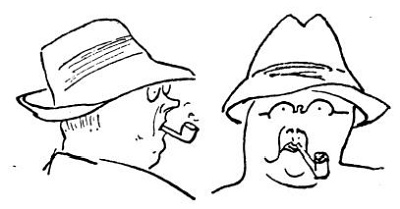
To je pan Nigel Playfair, divadelník; to je ten pán, co zanesl do Anglie moje kusy, ale dělá i lepší věci, je kliďas, umělec, podnikatel a jeden z mála opravdu moderních režisérů v Anglii.
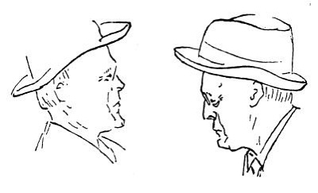
To je pan John Galsworthy, jednou jako dramatik a podruhé jako romanopisec, neboť, jářku, musíte ho znát po obou stránkách. Je to velmi tichý, jemný a dokonalý muž s tváří kněze nebo sudího, útlý a šlašitý, udělaný z taktu, zdrželivosti a zamyšlené plachosti, nesmírně vážný, jen kolem očí se mu to usmívá vlídnými, pozorně nabranými vráskami; má paní, která je mu velmi podobna, a jeho knížky jsou dokonalá a moudrá díla citlivého a poněkud smutného pozorovatele.
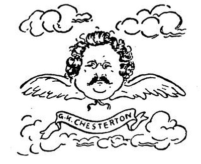
To je pan G. K. Chesterton; nakreslil jsem ho letícího, jednak proto, že jsem z něho mohl mít spíše jen letmý dojem, a pak pro jeho rajskou bujarost. Bohužel v té chvíli byl snad nějak stísněn situací trochu oficiální; mohl se jenom usmívat, ale jeho úsměv vydá za tři jiné. Kdybych mohl psát o jeho knížkách, o jeho poetické demokratičnosti, o jeho geniálním optimismu, byl by to nejveselejší z mých listů; ale protože jsem si vzal do hlavy psát jenom o tom, co jsem viděl svýma očima, popisuji vám rozsáhlého pána, jenž prostorovým útvarem připomíná Viktora Dyka, má mušketýrské kníry a plachá, chytrá očka pod skřipcem a rozpačité ruce, jaké mívají tlustí lidé, a vlající kravatu; je to zároveň dítě, obr, kudrnatý beránek a tur; má velkou brunátnou hlavu zamyšleného a vrtošivého výrazu a na první pohled ve mně budil ostych a prudkou náklonnost; víckrát jsem ho neviděl.
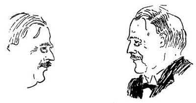
A to je pan H. G. Wells, jednou, jak vypadá mezi lidmi, a podruhé, jak vypadá doma; masivní hlava, silné, rozložité plece, silné a teplé dlaně; podobá se hospodáři, dělnému člověku, otci a všemu na světě. Má tenký a zamžený hlas člověka, který není řečníkem, tvář popsanou myšlením a prací, harmonický dům, pěknou drobnou paní, čilou jako čečetka, dva velké hravé hochy, oči jakoby přimhouřené a obestřené pod silným anglickým obočím. Prostý a rozumný, zdravý, silný, velmi informovaný a velmi obyčejný ve všem, co toto slovo má dobrého a vitálního. Člověk zapomíná, že mluví s velkým spisovatelem, protože mluví s rozvážným a univerzálním člověkem. Buďte hodně zdráv, Mr. Wells.
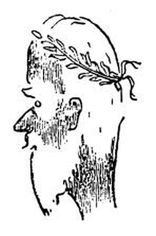
Toto je osoba téměř nadpřirozená, pan Bernard Shaw; nemohl jsem ho nakreslit lépe, neboť pořád se hýbe a povídá. Je ohromně vysoký, tenký a rovný, vypadá polo jako Pán Bůh a polo jako velmi zlomyslný satyr, který však tisíciletou sublimací ztratil všechno příliš přírodní. Má bílé vlasy, bílou bradu a velmi růžovou pleť, nelidsky jasné oči, silný a bojovný nos, něco rytířského z Dona Quijota, něco apoštolského a něco, co si dělá legraci ze všeho na světě, i ze sebe sama; jakživ jsem neviděl bytost tak neobyčejnou; abych řekl pravdu, já jsem se ho bál. Myslil jsem, že je to nějaký duch, který si jenom hraje na slavného Bernarda Shawa. Je vegetariánem, nevím, zda ze zásady nebo z gurmánství; člověk nikdy neví, mají-li lidé zásady ze zásady nebo pro osobní potěšení. Má rozvážnou paní, tichý klavecisínek[10] a okna na Temži; jiskří životem a povídá spoustu zajímavých věcí o sobě, o Strindbergovi, o Rodinovi a jiných slavných věcech; naslouchat mu je rozkoš spojená s hrůzou.
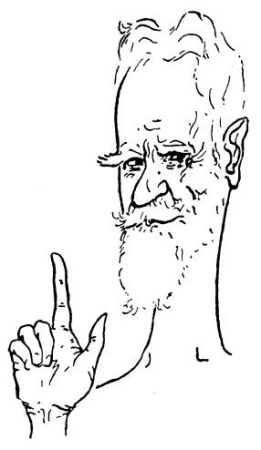
Měl bych ještě nakreslit mnoho pozoruhodných a krásných hlav, které jsem potkal; byli to muži, ženy i hezké dívky, literáti, žurnalisté, studenti, Indové, učenci, clubmani, Amerikáni a všecko, co je na světě; ale musím se už loučit, přátelé; nechci věřit, že jsem vás viděl naposled.
Útěk
Nakonec vyzradím hrozné věci; například anglická neděle je strašlivá. Lidé říkají, že neděle je proto, aby se mohlo jet do přírody; není to pravda; lidé jedou do přírody, aby se v divoké panice zachránili před anglickou nedělí. V sobotu popadne každého Brita temný pud někam uprchnout, tak jako zvěř v temném pudu prchá před blížícím se zemětřesením. Kdo nemohl uniknout, uchýlí se aspoň do kostela, aby v modlitbách a zpěvu přečkal den hrůzy. Den, kdy se nevaří, nejezdí, nekouká a nemyslí. Nevím, pro jaké nevýslovné viny odsoudil Hospodin Anglii k týdennímu trestu neděle.
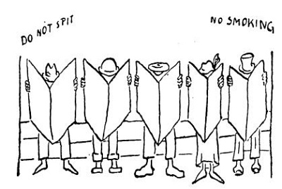
Anglická kuchyně je dvojího druhu: dobrého a prostředního. Dobrá anglická kuchyně je prostě francouzská kuchyně; prostřední kuchyně v prostředním hotelu pro prostředního Angličana vysvětluje do velké míry anglickou zasmušilost a zamlklost. Nikdo nemůže zářit a trylkovat, žvýkaje pressed beef potřený ďábelskou hořčicí. Nikdo se nemůže nahlas radovat, odlepuje si od zubů třesoucí se pudink z tapioky. Člověk hrozně zvážní, dostane-li lososa politého růžovou škrobovinou; a má-li k snídani, k obědu i k večeři něco, co zaživa je rybou a v melancholickém stavu poživatelnosti se jmenuje fried sole, vydělal-li si třikrát denně žaludek černou čajovou jirchou a napil-li se zasmušilého, teplého piva, požil-li univerzálních omáček, konzervované zeleniny, custardu[11] a muttonu, nuže, vyčerpal snad všechny tělesné požitky průměrného Angličana a počíná chápat jeho uzavřenost, vážnost a přísné mravy. Proti tomu topinky, opékaný sýr a pečený špek jsou jistě dědictví veselé staré Anglie. Jsem přesvědčen, že starý Shakespeare se neproléval čajovým tříslem a starý Dickens se netěšil ze života nad hovězí konzervou; pokud se týče starého Johna Knoxe, nejsem si tím tak jist.
Anglické kuchyni schází nějaká lehkost a květnatost, radost ze života, melodičnost a hříšné rozkošnictví. Řekl bych, že to schází také anglickému životu. Anglická ulice není rozkošnická. Obyčejný a průměrný život není prosypán veselými hluky, pachy a podívanými. Obyčejný den nejiskří pěknými náhodami, úsměvy, poupaty událostí. Nemůžeš se sdružit s ulicí, lidmi a hlasy. Nic na tebe nemrkne přátelsky a sdílně.
Milenci se milují v parcích těžce, zahryznutě a beze slova. Pijáci pijí v barech, každý pro sebe. Průměrný člověk jede domů a čte noviny, nekoukaje napravo ani nalevo. Doma má krb, zahrádku a nedotknutelné soukromí rodiny. Mimoto pěstuje sport a weekend. Víc jsem o jeho životě nemohl zjistit.
Kontinent je hlučnější, méně ukázněný, špinavější, vzteklejší, prohnanější, vášnivější, družnější, zamilovanější, poživačný, bujný, hrubý, hovorný, nevázaný a jaksi míň dokonalý. Prosím vás, dejte mně jízdní lístek rovnou na kontinent.
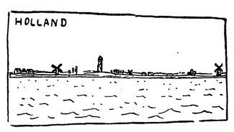
Na lodi
Člověk na břehu by chtěl být na lodi, jež odjíždí; člověk na lodi by chtěl být na břehu, který je v dálce. Když jsem byl v Anglii, pořád jsem myslil na to, co krásného je doma. Až budu doma, budu snad myslit na to, co je v Anglii vyššího a lepšího než kde jinde.
Viděl jsem velikost a moc, bohatství, blahobyt a vyspělost nevyrovnatelnou. Nikdy mi nebylo smutno, že jsme malý a nehotový kousek světa. Být malý, neurovnaný a nedodělaný je dobré a statečné poslání. Jsou veliké a nádherné transatlantiky se třemi komíny, první třídou, koupelnami a leštěnou mosazí; a jsou malé čadící parníčky, jež hrkotají po velikém moři; je to, lidi, docela pěkná kuráž, být takovým malým a nepohodlným vehiklem. A neříkejte, že jsou u nás malé poměry; vesmír kolem nás je chválabohu stejně veliký jako vesmír kolem Britského impéria. Malý parníček toho tolik nepojme jako taková velká loď; ale haha, pane, může doplout stejně daleko nebo někam jinam. Záleží na mužstvu.
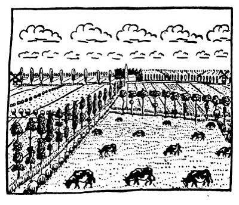
Ještě mi všecko hučí v hlavě; chvíli je to, jako když člověk vyjde z veliké továrny a je ohlušen tím tichem venku, a chvíli zase, jako by ještě zvonily všechny pobožné zvony Anglie:
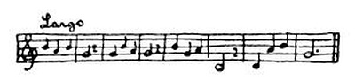
Ale už se mi do toho míchají česká slova, která budu za maličko slyšet. Jsme malý národ, a proto mi každý bude připadat, jako bych ho osobně znal. První, koho uvidím, bude obtloustlý a hlasitý člověk s viržinkou, člověk projevující nějakou nespokojenost, cholerický, podrážděný, hovorný a se srdcem na talíři. I pozdrav Bůh, jako bychom se znali.
Ta nízká proužka na obzoru, to je už Holandsko se svými větrníky, alejemi a černobílými kravkami; rovná a pěkná země, lidová, srdečná a pohodlná.
Anglický bílý břeh zatím zmizel; škoda, zapomněl jsem se rozloučit. Ale až budu doma, budu si přemílat všechno, co jsem viděl, a ať bude o čemkoliv řeč, o výchově dětí nebo o dopravnictví, o literatuře nebo o úctě člověka k člověku, o koních nebo o lenoškách, o tom, jací lidé jsou nebo jací by měli být, začnu znalecky povídat: „To v Anglii…“
Ale nikdo mne už nebude poslouchat.
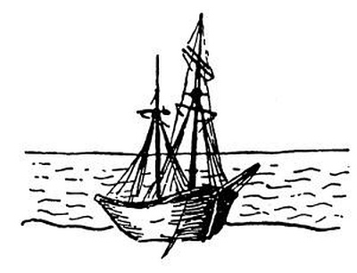